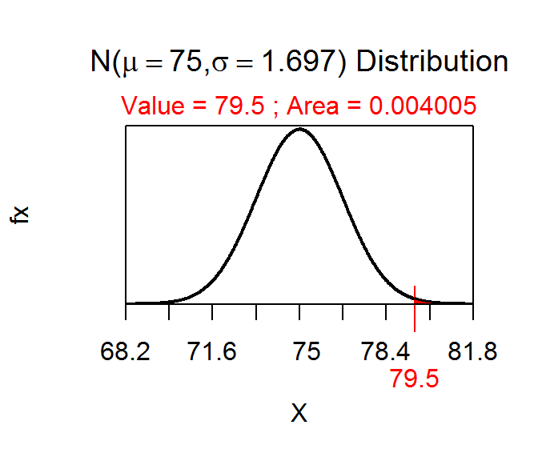
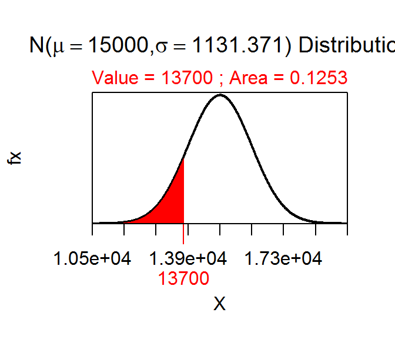
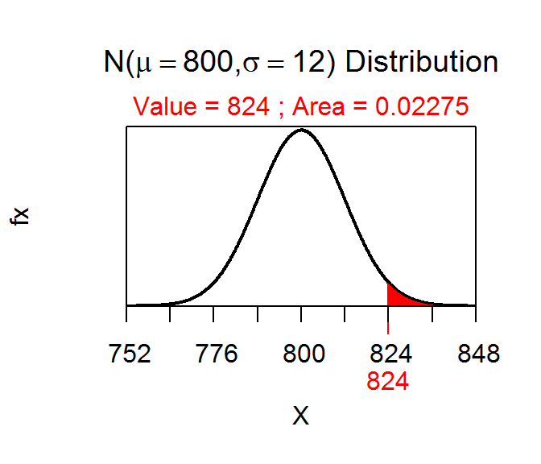
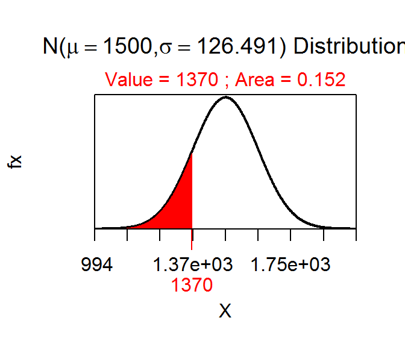

P-Value Calculations and Decisions
- The p-value is “the probabiity of observing a sample mean of 79.5 or greater if the population mean is 75.” Reject \(H_{0}\) because p-value=0.0040<α (Figure 1).
- The p-value is “the probabiity of observing a sample mean of 11.2 or ‘different’ if the population mean is 14.” Reject \(H_{0}\) because p-value=0.0196<α (Figure 2).
- The p-value is “the probabiity of observing a sample mean of 918 or greater if the population mean is 880.” Reject \(H_{0}\) because p-value=0.0001<α (Figure 3).
- The p-value is “the probabiity of observing a sample mean of 13700 or less if the population mean is 15000.” Do not reject \(H_{0}\) because p-value=0.1253>α (Figure 4).
- The p-value is “the probabiity of observing a sample mean of 824 or ‘different’ if the population mean is 800.” Do not reject \(H_{0}\) because p-value=0.0455>α (Figure 5).
- The p-value is “the probabiity of observing a sample mean of 73 or less if the population mean is 80.” Reject \(H_{0}\) because p-value=0.0276<α (Figure 6).
- The p-value is “the probabiity of observing a sample mean of 1370 or ‘different’ if the population mean is 1500.” Do not reject \(H_{0}\) because p-value=0.3041>alpha; (Figure 7).

Figure 1: Normal distribution representing the p-value calculation for the first example.

Figure 2: Normal distribution representing the p-value calculation for the second example.

Figure 3: Normal distribution representing the p-value calculation for the third example.

Figure 4: Normal distribution representing the p-value calculation for the fourth example.

Figure 5: Normal distribution representing the p-value calculation for the fifth example.

Figure 6: Normal distribution representing the p-value calculation for the sixth example.

Figure 7: Normal distribution representing the p-value calculation for the seventh example.
R Appendix.
distrib(918,mean=880,sd=90/sqrt(80),lower.tail=FALSE)
distrib(13700,mean=15000,sd=8000/sqrt(50))
2*distrib(824,mean=800,sd=60/sqrt(25),lower.tail=FALSE)
distrib(73,mean=80,sd=20/sqrt(30))
2*distrib(1370,mean=1500,sd=800/sqrt(40))